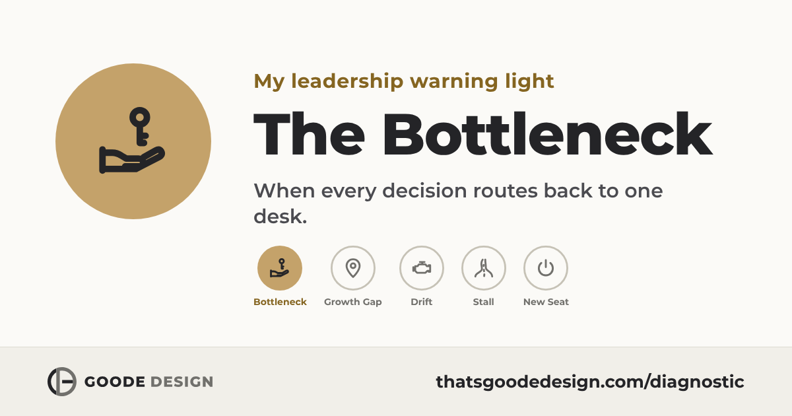

The pattern

Diagnostic completeYour warning light
Your readout
The Bottleneck
Five warning lights. This one is on.

You’re not the only one
4 in 10
It’s a pattern, not a personal failing
You’ll probably recognize these:
Your first move
One move for this week
Yours to use this week, with or without me.
- Name the patternDone, just now
- Make the first moveThis week
- Fix the designSo it stops coming back
You told me this would make the next six months worth it
The shortest route from here to there:

Who’s behind this readout
I’m Matt Goode. I’ve been in this seat.
Teacher, coach, dean of students and administrator for twenty years in schools, seventeen of them at McDonogh. Then leadership and team development in humanitarian assistance at USAID. Now growth-stage founders, where honest feedback is the only kind on offer.
- Gallup-Certified Strengths Coach
- EQ-i 2.0 Certified Practitioner
- MSc, London School of Economics
- Author of CLUTCH
$65,000
An engineering firm was losing mid-level managers at roughly $65,000 a head. They built a simple development track. Turnover dropped to near zero.
 The system behind this diagnostic is in the book. CLUTCH: the leadership operating system
The system behind this diagnostic is in the book. CLUTCH: the leadership operating system
Next step
Thirty minutes, then decide
- No pitch
- We start from your readout
- You leave with your first move mapped
Not ready to talk yet?
The Leadership Lab is where I write about the design problems behind these patterns. Short, practical, no fluff.
Read the Leadership LabPatterns live in teams, not people
Send your warning light to the person who should see it. The link shares the pattern, never your answers.